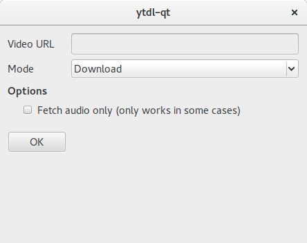

youtube-dl-qt
Simple QT-frontend for youtube-dl.

youtube-dl is able to download lots of videos from streaming sites, not only from YouTube. See supported sites.
Installing
GNU/Linux
Check out the requirements. You can choose to compile the binary yourself or use the binary I compiled (found in Releases). Be sure to give the binary execution rights.
Windows
There is an executable installer for Windows found in the releases called setup_windows.exe.
A portable version can be found in the 7zip archive youtube-dl-qt-windows.
Requirements
GNU/Linux
- Qt5
- youtube-dl
Both are available in most repositories.
Ubuntu/Mint
The packages you need to install are:
libqt5core5a
libqt5gui5
libqt5widgets5
youtube-dl
ffmpeg (optional)
Note that the youtube-dl version in the Ubuntu repositories is outdated and may not support all the sites you expect. To install the latest version of youtube-dl check out their installation instructions.
Compiling
First, clone the git repository.
clone git@github.com:rrooij/youtube-dl-qt.git
Go into the directory:
cd youtube-dl-qt
Run:
make clean
qmake -config release
make
The executable should be named youtube-dl-qt and can be run by ./youtube-dl-qt.